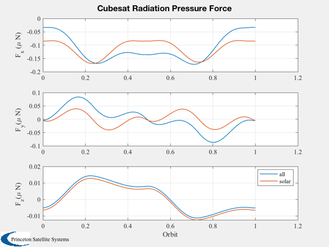
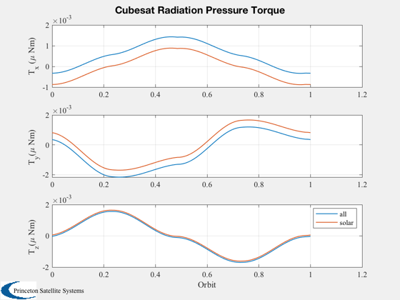

Radiation pressure disturbance demo.
Compute the radiation pressure force and torque for a complete orbit in LEO, assuming an offset from LVLH pointing. The disturbances are calculated both with and without the planetary components (albedo and radiation).
Things to try:
1. Change the optical coefficients 2. Different center of mass 3. Higher or lower orbital altitude.
---------------------------------------------------------------------- See also CubeSatRadiationPressure, Eclipse ----------------------------------------------------------------------
%------------------------------------------------------------------------ % Copyright (c) 2009, 2014 Princeton Satellite Systems, Inc. % All rights reserved. %------------------------------------------------------------------------ % Since version 2014.1 % 2016.0.1 - Initialize p from CubeSatEnvironment to have correct fields % including q %------------------------------------------------------------------------ d = CubeSatRadiationPressure; % Provide an attitude offset from LVLH d.att.type = 'lvlh'; d.att.qLVLHToBody = AU2Q( 0.1, -[1;1;1] ); % Specify some absorption and some reflection. The coefficients are % expressed as [absorbed;specular;diffuse] with one column per face. d.sigma = [0.2*ones(1,6);0.8*ones(1,6);zeros(1,6)]; % Specify a CM offset so we get a torque as well d.cM = [0.01;0.01;0.01]; % Generate a complete orbit [r,v,t] = RVFromKepler([7000 0 0 0 0 0]); p = struct; [p.uSun, rSun] = SunV1(Date2JD([2010 5 5 0 0 0])); % compute a second time with planetary disturbances off d2 = d; d2.planet = 0; force = zeros(3,100); torque = zeros(3,100); force2 = force; torque2 = torque; % Use a constant environment except eclipses p = CubeSatEnvironment; for k = 1:100 p.v = v(:,k); p.r = r(:,k); p.n = Eclipse( p.r, p.uSun*rSun); [force(:,k),torque(:,k)] = CubeSatRadiationPressure( p, d ); [force2(:,k),torque2(:,k)] = CubeSatRadiationPressure( p, d2 ); end pO = Period(7000); Plot2D( t/pO, [force;force2]*1e6, 'Orbit', {'F_x (\mu N)' 'F_y(\mu N)' 'F_z(\mu N)'},... 'Cubesat Radiation Pressure Force','lin',{[1 4],[2 5],[3 6]}); legend('all','solar') Plot2D( t/pO, [torque;torque2]*1e6, 'Orbit', {'T_x (\mu Nm)' 'T_y(\mu Nm)' 'T_z(\mu Nm)'},... 'Cubesat Radiation Pressure Torque','lin',{[1 4],[2 5],[3 6]}); legend('all','solar') %-------------------------------------- 